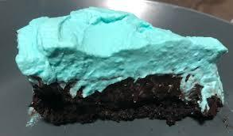

Nuka Cola Quantum Pie

"For a dessert so sweet, it might just light up your life (literally)."
Ingredients
- 1 cup of flour
- 2 tablespoons of Sugar Bombs (crushed for texture)
- ½ cup of Nuka-Cola Quantum (or blue sports drink if you’re low on rads)
- 1 Brahmin egg (or 2 regular eggs)
- 1 stick of Mole Rat butter
- Preheat your nuclear-powered oven to 350°F.
- Mix flour, Sugar Bombs, and Mole Rat butter in a bowl until crumbly.
- Slowly stir in Nuka-Cola Quantum. Watch the batter fizz—science is amazing!
- Pour into a pie tin salvaged from an abandoned diner. Bake for 25 minutes.
- Serve with glowing blue glaze (just drizzle more Nuka-Cola Quantum on top).
Fun Fact: The glow in Quantum isn’t just for aesthetics—it’s perfect for lighting your way at night!